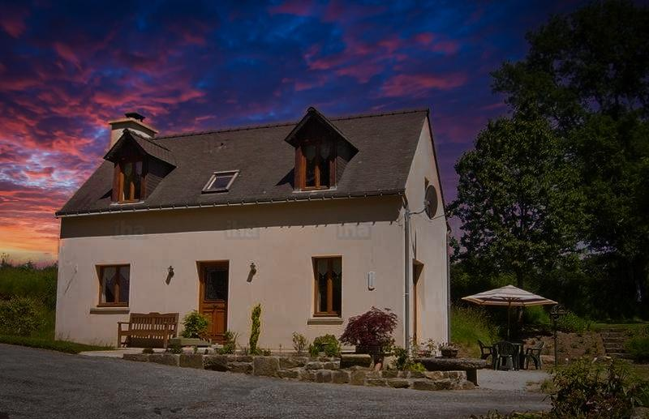

Willow
Le Saule
- Capacité
- 5 pers. + lit bébé
- Surface
- 90 m²
Un penty breton face au lac du Dordu, exposé plein sud. Cuisine ouverte sur un séjour cosy ; à l'étage, une chambre avec lit double king size, une chambre d'enfants à lits superposés et une salle de bain (baignoire et douche). Terrasse avec salon de jardin, barbecue et parasol.
Tarifs : [à compléter – non publiés sur le site actuel]
Demander Le Saule